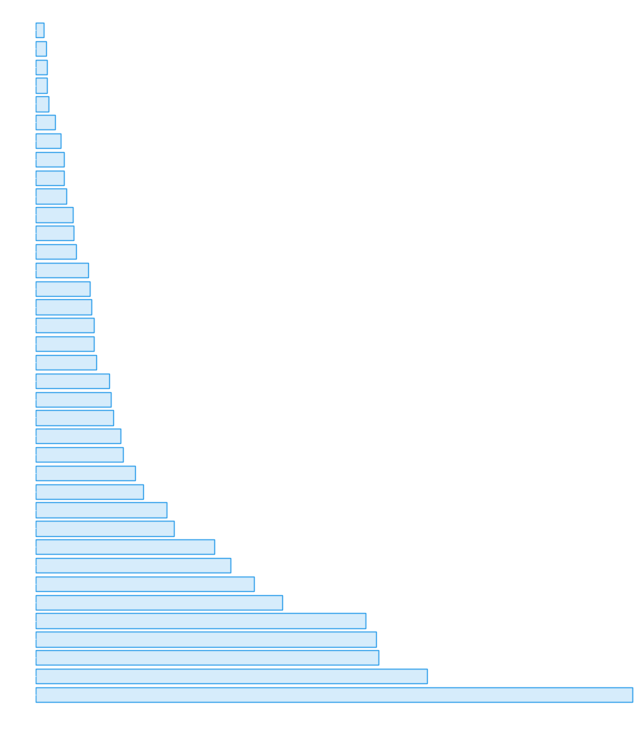
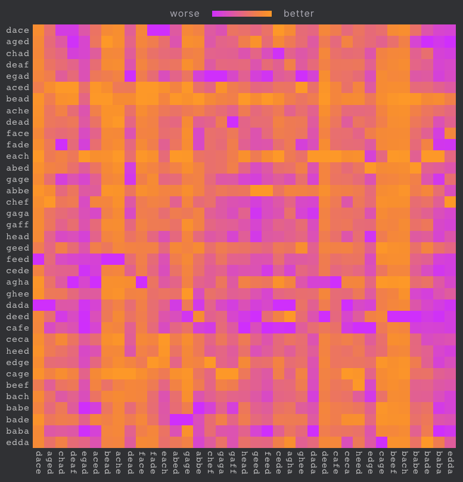

4 minutes
Alphabet Chess
TLDR: Alphabet chess is a chess variant that allows handicapping by mixing in a bit of poker into the beginning of the game. Moves must be played according to a secret word at the beginning of the game.
Chess has been played in different forms since the seventh century, and in its modern form since the nineteenth century. Opening theory, i.e. the study of the best moves to begin the game with, has been developing since then.
The EGG Opening
I was inspired the other day after watching a video by Eric Rosen called “Quadruple Egg”. Chess boards are usually notated from left to right with the letters A through H. (These columns are called “files”.) The “egg” opening, therefore, involves moving the E pawn, then the G pawn twice, spelling the word “egg”. It’s an extremely unconventional opening, but how bad is it compared with unrestricted openings?
What are the best (i.e. least bad) alphabetic openings?
We can call the Egg Opening one version of an alphabetical chess opening: an opening where the piece moved must start on a file corresponding to the next letter in a given word. In this definition, the pieces don’t have to be pawns.
This raises an interesting question: what are the best and worst alphabetical openings? Under engine evaluation, they will all be losing, because the opponent is not limited in which piece they can move. However, as we will see, some are much worse than others.
Four letters
English doesn’t have an official dictionary, so I chose this list of four letter words. From there, we need to eliminate all words with letters after H. This leaves us with 37 words. Don’t ask me what they all mean:
abbe, abed, aced, ache, aged, agha,
baba, babe, bach, bade, bead, beef,
cafe, cage, ceca, cede, chad, chef,
dace, dada, dead, deaf, deed,
each, edda, edge, egad,
face, fade, feed,
gaff, gaga, gage, geed, ghee,
head, heed
A simple way of measuring how bad each of these is would be to evaluate them against Stockfish to see how badly we’re losing after playing these moves. In this simulation, we play as white each time.

This measurement approach has a problem, though: Stockfish is assuming that white can make any move, and playing black’s moves accordingly. In reality, white’s moves are extremely restricted. If black knew about this restriction, he would be much more aggressive.
Further, if black were to discover which word white is playing, he could punish white. And even if black doesn’t know exactly which word white is playing, black could eliminate moves which definitely can’t form English words. For example, if white’s first move is H, the next move will definitely be E.
Alphabetical Chess
What if both players were required to play their first four moves from dictionary words? And what if those words were pre-assigned but secret to each other? For example, if each player drew a card from a deck. In this game, if a player is unable to make a move with a piece of the correct letter, they lose.
There are a few interesting features of this chess variant:
- Your starting word will have a big impact on how the game will turn out.
- Figuring out your opponent’s word will give you a big advantage.
- Checks and other attacks can be devastating. You may not be able to respond to the attack, and checks may end the game immediately.
In that case, it isn’t necessarily true that the best and worst words from above will still be the best and worst when pitted against another randomly chosen word. It’s a rock-paper-scissors situation: depending on which word A you happen to get, there is another word B which best counters your word, and another word C which your word best counters.

Here the y-axis shows the word which was played with the white pieces, and the x-axis shows the word played with black.
Cool Things About Alphabet Chess
There are a few interesting benefits to this variant:
-
Handicaps are quite easily built in. The longer your secret word is, the more restricted your play is and the more of a handicap you will have.
-
An element of gamesmanship and imperfect information. Players can win on the board with good moves, but also “off-board” by figuring out their opponent’s secret word.
-
Prevents good players from using memorized openings.
Play Alphabet Chess
If you’d like to try it out with a friend and a chessboard, here’s an online tool that’ll pick a random word: https://alphachess.surge.sh